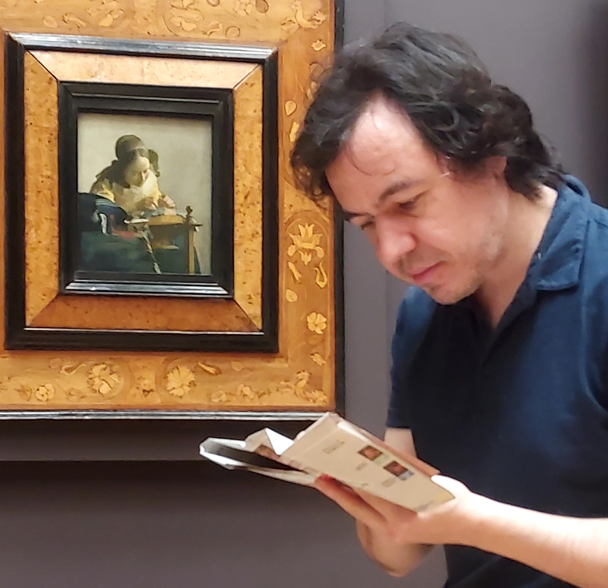

PhD Mathematics
2019 KU Leuven
Adviser: Marco Zambon
Interests:
My research focuses on singular foliations and Lie groupoids. I came to them through Lie theory, and have since expanded into Poisson geometry, higher structures and diffeology. I am curious to expand it further.
Contact:
Work: Max Planck Institute for Mathematics in Bonn.
garmendia $at$ mpim-bonn.mpg.de
Languages: ESP, ENG, FR, GER, CAT.

For more info Wikipedia commons